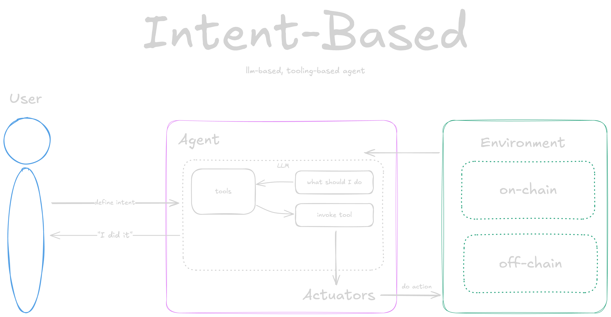
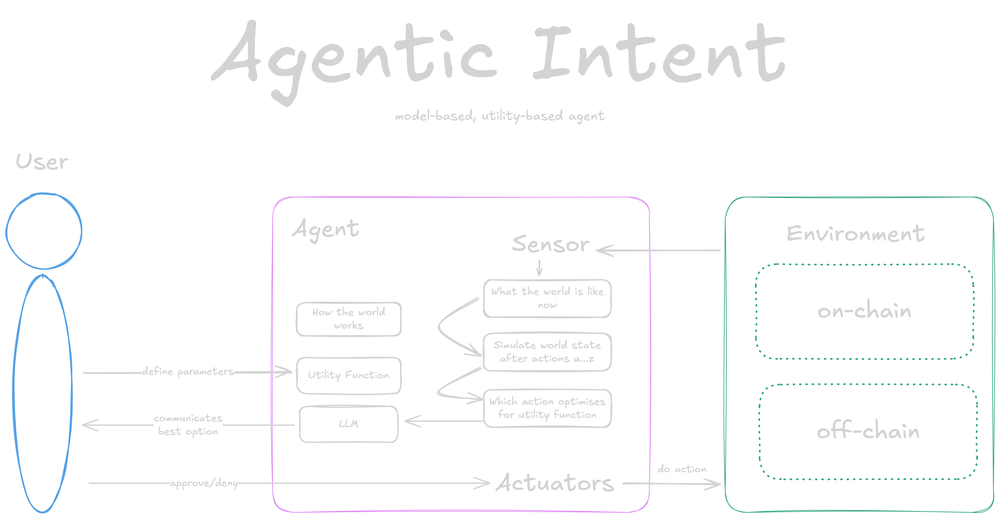
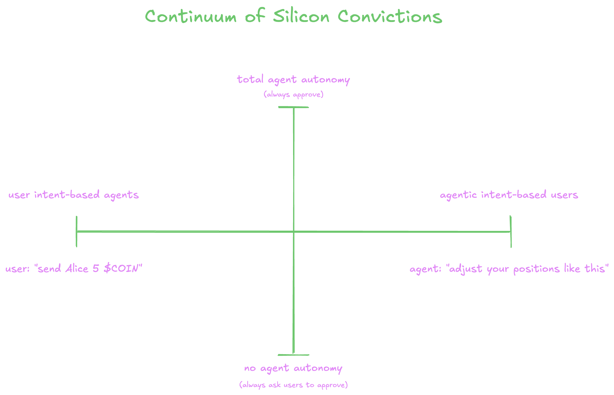

What are we musing about?
Every day, we use tools that seem to know us better than we know ourselves. Whether it’s your thermostat keeping you cosy, your sleep tracker suggesting improvements, or a bot sniffing out profits in a mempool, these systems embody intelligence and give us quick access to a fine-tuned daily experience.
We've yet to scratch the surface of Web3 agent potential, yet there is now the significant effort and momentum in this direction. To bring about the power of Web3 for end-users, these agents must transcend primary responses (such as intent-based agents) to truly serve us—anticipate, suggest, align, and act invisibly on our behalf.
This post is a first musing on what happens when we let agents take the wheel—not to replace us but to complement and empower us. From some background on machine perception to prediction markets, this is a short post on how we can build agents that optimally execute according to our preferences and bring about easy access to more involved Web3 interactions?
Some Background: Machine Perception
Machines perceive the world in remarkable ways. Machine perception powers the tools and technologies shaping our lives, from thermostats keeping your home cosy to autonomous cars navigating busy streets.
- Thermostats maintain your desired indoor climate.
- Sleep trackers like Eight Sleep, monitor your sleep patterns and bed temperature.
- Voice assistants Siri and Alexa respond to spoken commands.
- Tesla’s autopilot “sees” and interprets the road ahead.
- MEV bots watch the Ethereum mempool for profitable transactions.
Arguably, each of these is an agent. They perceive their environment, act accordingly, and are tailored for specific interaction designs.
- Thermostats are simple and intuitive.
- Voice assistants are (somewhat) conversational.
- Tesla autopilot is hands-free.
- MEV bots? Deploy-and-forget (kind of) machines.
These products are designed to already reflect user intent. You don’t need to tell your thermostat to keep you warm; it just does it.
But what happens when user intent isn’t well understood, articulated, or aligned with the agent’s capabilities? For example, you wouldn’t want to type into a chat UI, “I intend to comply with speed limits while driving to my destination.” Your Tesla should already know that. The best interaction design is often invisible—reducing cognitive load and letting agents handle complexity on your behalf.
For agents to truly excel, they need a model of the world (an understanding of how it works) and a goal (or utility function). MEV bots, for example, excel because they
- Understand Ethereum (or its mempool).
- Pursue the goal of making money.
With the right interaction design, agents can do more than react—they can guide users toward optimized decisions. Agents that know what you should do before you do are the next step in this evolution.
Intent-Based Agents: What’s Wrong with the Current Design?
In Web3, intent-based agents rely on users to articulate their objectives in natural language. You tell the agent what you want it to do and when (usually right now). But let’s be honest, most of us are terrible at defining intent. This is my mental model of how it works (note: includes inaccuracies): 
Think about it—how often can you clearly articulate your goals, risk tolerance, or utility functions in words? It’s a cognitive overload and, frankly, poor interaction design. Instead of expecting users to define their intent, what if agents could define it, communicate it to you through an unsigned transaction, and let you make the final call?
Agentic Intent: A Better Way Forward
As engineers, we excel at defining utility functions through code, enabling agents to
- Understand the world (via models).
- Optimize decisions for end-users without requiring them to articulate their intent.
Here’s how it works:
- User’s Role: Explicitly define preferences, such as risk profile or broad goals (utility function variables).
- Agent’s Role: Propose actions based on a deep understanding of the world and its models.
I think it looks a little something like this (note: this isn't too accurate, but you get the idea): 
This shifts the interaction design from user-defined intent to agent-defined intent. The agent presents its intent (e.g., unsigned transactions optimized for the user’s goals), and the user approves or rejects them. This approach reduces user friction, makes interactions more seamless, and allows agents to provide actionable insights instead of just options. This means users experiences can exist across a continuum of silicon convictions.
Silicon Convictions: Agents in Prediction Markets
An agent’s convictions represent its intent to optimize for a specific utility function. These convictions can be communicated to users through unsigned transactions or other means, allowing users to make informed decisions.
Prediction markets provide a fertile testing ground for this concept. These markets represent collective beliefs about future events (e.g., the probability of a specific outcome). Similarly, machine learning and statistical models are designed to understand the world and estimate probabilities—often more accurately than humans.
With an ability to perceive both a prediction market on-chain and real world events off-chain, these agents act as a bridge between the two. These agents can optimize for a user’s utility function and turn the average user into a sophisticated power-user. Consider an example of 20 different prediction markets each representing a different football game's outcome, the agent can help users optimize their bets across all 20 games, simultaneously to maximize profit or minimize risk. Imagine your agent messaging you its intent on Telegram and you can approve or reject it with a single click--that's pretty cool.
These Silicon Convictions can be categorized into two extremes of a continuum:
- User-Focused Agents use ML/statistical models to help users optimize for goals like maximizing profit or minimizing risk.
- Market-Focused Agents are autonomous agents competing in prediction markets to maximize their own utility functions, becoming the most accurate and efficient participants.
This is yet another continuum of user-dependence on an agent’s intent. Users can, for example, choose to interact with an agent's presented intent frequently; approve an agent’s intent, modify it, or ignore it entirely. Users can also choose to set and forget an agent’s intent, allowing it to act autonomously with total autonomy. The key unlock is for any interaction with an end-user that the agent’s intent is clear and actionable, allowing users to make informed decisions. This is where LLMs become handy to help agents communicate their intent, not everyone understands an unsigned transaction with many mutli-calls that look to optimise a given utility function, LLMs can help bridge that gap.
Imagine fantasy football but for ML models. Each agent starts with the same resources, competes in prediction markets, and is evaluated based on performance. This gamified environment showcases the power of these agents and encourages innovation in design and strategy. Machine learning teams can become eSports teams.
Why Does This Matter?
Right now, the average Web3 user isn’t getting the full benefits of the technology. The barriers to entry—complex interfaces, cognitive overload, and poor interaction design—limit accessibility and utility.
Agentic-intent design can change that for both users and markets.
- For users this means simplified, optimized interactions with better control over assets and decisions.
- For markets this can deliver greater efficiency, accuracy, and liquidity as agents bring their predictive power.
As machines continue to perceive and act on the world around us, the challenge isn’t just building more brilliant agents—it’s building agents that make our lives easier. By shifting from user-defined intent to agent-defined intent, we can create tools that work seamlessly, optimize outcomes, and open the door to a new era of interaction design.
There's no better place to make this innovation happen than Starknet.
- Transaction multicall means users/agents can interact with more than one contract with one transaction.
- Session keys allow agents to become more autonomous as users can define signing policies that constrain the agent.
- Account abstraction unlocks a mixed experience where agents and users can collaborate.